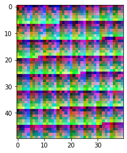
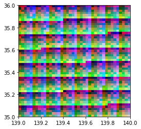
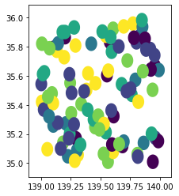

Rasterio¶
[76]:
import rasterio
import numpy as np
import rasterio.windows
import rasterio.plot
import rasterio.features
import geopandas as gpd
import random
作成¶
[21]:
array0 = (np.random.randint(0, 225, 2000).reshape((40, 50))).astype('uint8').T
array1 = (np.array(range(2000)).reshape((50, 40)) % 256).astype('uint8')
array2 = (np.array(range(2000)).reshape((40, 50)) % 256).astype('uint8').T
array = np.array((array0, array1, array2))
array
[21]:
array([[[184, 202, 180, ..., 44, 174, 171],
[ 12, 191, 12, ..., 7, 54, 153],
[193, 42, 62, ..., 29, 211, 116],
...,
[ 84, 48, 42, ..., 215, 147, 210],
[ 53, 63, 183, ..., 219, 168, 165],
[169, 30, 100, ..., 223, 218, 223]],
[[ 0, 1, 2, ..., 37, 38, 39],
[ 40, 41, 42, ..., 77, 78, 79],
[ 80, 81, 82, ..., 117, 118, 119],
...,
[ 88, 89, 90, ..., 125, 126, 127],
[128, 129, 130, ..., 165, 166, 167],
[168, 169, 170, ..., 205, 206, 207]],
[[ 0, 50, 100, ..., 58, 108, 158],
[ 1, 51, 101, ..., 59, 109, 159],
[ 2, 52, 102, ..., 60, 110, 160],
...,
[ 47, 97, 147, ..., 105, 155, 205],
[ 48, 98, 148, ..., 106, 156, 206],
[ 49, 99, 149, ..., 107, 157, 207]]], dtype=uint8)
[3]:
profile = rasterio.profiles.DefaultGTiffProfile()
[24]:
profile['count'], profile['height'], profile['width'] = array.shape
[23]:
profile['transform'] = rasterio.transform.from_bounds(west=139,
south=35,
east=140,
north=36,
width=array.shape[2],
height=array.shape[1])
profile['crs'] = rasterio.crs.CRS.from_epsg(4326)
profile
[23]:
{'driver': 'GTiff', 'interleave': 'band', 'tiled': True, 'blockxsize': 256, 'blockysize': 256, 'compress': 'lzw', 'nodata': 0, 'dtype': 'uint8', 'transform': Affine(0.025, 0.0, 139.0,
0.0, -0.02, 36.0), 'crs': CRS.from_epsg(4326), 'count': 2, 'height': 30, 'width': 40}
read/write¶
[25]:
with rasterio.open('data/raster_4326.tif','w', **profile) as dst:
dst.write(array)
[30]:
array
[30]:
array([[[184, 202, 180, ..., 44, 174, 171],
[ 12, 191, 12, ..., 7, 54, 153],
[193, 42, 62, ..., 29, 211, 116],
...,
[ 84, 48, 42, ..., 215, 147, 210],
[ 53, 63, 183, ..., 219, 168, 165],
[169, 30, 100, ..., 223, 218, 223]],
[[ 0, 1, 2, ..., 37, 38, 39],
[ 40, 41, 42, ..., 77, 78, 79],
[ 80, 81, 82, ..., 117, 118, 119],
...,
[ 88, 89, 90, ..., 125, 126, 127],
[128, 129, 130, ..., 165, 166, 167],
[168, 169, 170, ..., 205, 206, 207]],
[[ 0, 50, 100, ..., 58, 108, 158],
[ 1, 51, 101, ..., 59, 109, 159],
[ 2, 52, 102, ..., 60, 110, 160],
...,
[ 47, 97, 147, ..., 105, 155, 205],
[ 48, 98, 148, ..., 106, 156, 206],
[ 49, 99, 149, ..., 107, 157, 207]]], dtype=uint8)
plot¶
[40]:
(array/255).min()
[40]:
0.0
[46]:
import rasterio.plot
rasterio.plot.show((array/255).astype('float32'))

[46]:
<matplotlib.axes._subplots.AxesSubplot at 0x7f85c9ea3fd0>
Get coordinates¶
[26]:
rasterio.transform.xy(transform =profile["transform"],
rows=1, cols=1, offset='center')
[26]:
(139.0375, 35.97)
[27]:
profile["transform"]
[27]:
Affine(0.025, 0.0, 139.0,
0.0, -0.02, 36.0)
profile¶
[60]:
with rasterio.open('data/raster_4326.tif') as src:
profile = src.profile
dir(profile)
[60]:
['_MutableMapping__marker',
'__abstractmethods__',
'__class__',
'__contains__',
'__copy__',
'__delattr__',
'__delitem__',
'__dict__',
'__dir__',
'__doc__',
'__eq__',
'__format__',
'__ge__',
'__getattribute__',
'__getitem__',
'__gt__',
'__hash__',
'__init__',
'__init_subclass__',
'__iter__',
'__le__',
'__len__',
'__lt__',
'__module__',
'__ne__',
'__new__',
'__reduce__',
'__reduce_ex__',
'__repr__',
'__reversed__',
'__setattr__',
'__setitem__',
'__sizeof__',
'__slots__',
'__str__',
'__subclasshook__',
'__weakref__',
'_abc_impl',
'clear',
'copy',
'data',
'defaults',
'fromkeys',
'get',
'items',
'keys',
'pop',
'popitem',
'setdefault',
'update',
'values']
Windows¶
[65]:
[66]:
# change tile size
with rasterio.open('data/raster_4326.tif') as src:
array = src.read()
profile = src.profile
profile.update({'blockxsize':16,
'blockysize':16})
with rasterio.open('data/raster_4326_blk-10.tif', 'w', **profile) as dst:
dst.write(array)
[67]:
profile
[67]:
{'driver': 'GTiff', 'dtype': 'uint8', 'nodata': 0.0, 'width': 40, 'height': 50, 'count': 3, 'crs': CRS.from_epsg(4326), 'transform': Affine(0.025, 0.0, 139.0,
0.0, -0.02, 36.0), 'blockxsize': 16, 'blockysize': 16, 'tiled': True, 'compress': 'lzw', 'interleave': 'band'}
[68]:
with rasterio.MemoryFile() as memfile:
with memfile.open(**profile) as src:
windows = list(src.block_windows())
print(windows)
[((0, 0), Window(col_off=0, row_off=0, width=16, height=16)), ((0, 1), Window(col_off=16, row_off=0, width=16, height=16)), ((0, 2), Window(col_off=32, row_off=0, width=8, height=16)), ((1, 0), Window(col_off=0, row_off=16, width=16, height=16)), ((1, 1), Window(col_off=16, row_off=16, width=16, height=16)), ((1, 2), Window(col_off=32, row_off=16, width=8, height=16)), ((2, 0), Window(col_off=0, row_off=32, width=16, height=16)), ((2, 1), Window(col_off=16, row_off=32, width=16, height=16)), ((2, 2), Window(col_off=32, row_off=32, width=8, height=16)), ((3, 0), Window(col_off=0, row_off=48, width=16, height=2)), ((3, 1), Window(col_off=16, row_off=48, width=16, height=2)), ((3, 2), Window(col_off=32, row_off=48, width=8, height=2))]
[104]:
def as_rasterio_datareader(array, profile):
def wrapper(func):
def _wrapper(*args, **kwargs):
with rasterio.MemoryFile() as memfile:
with memfile.open(**profile) as src:
src.write(array)
with rasterio.open(memfile) as src:
return func(src)
return _wrapper
return wrapper
@as_rasterio_datareader(array = array, profile = profile)
def myplot(src):
rasterio.plot.show(src)
myplot(array=array, profile=profile)

[98]:
with rasterio.MemoryFile() as memfile:
with memfile.open(**profile) as src:
src.write(array)
with rasterio.open(memfile) as src:
rasterio.plot.show(src)
Rasterize¶
[60]:
vector_gdf = gpd.read_file('data/r_points_buff.shp')
vector_gdf['cat'] = [random.randint(0, 5) for i in range(len(vector_gdf))]
vector_gdf.plot(column='cat')
[60]:
<matplotlib.axes._subplots.AxesSubplot at 0x7fda12ea9810>

[63]:
vector_gdf
[63]:
| class | geometry | cat | |
|---|---|---|---|
| 0 | a | POLYGON ((139.85215 35.83012, 139.85191 35.825... | 1 |
| 1 | c | POLYGON ((139.61260 35.00986, 139.61236 35.004... | 4 |
| 2 | a | POLYGON ((139.50344 35.24756, 139.50320 35.242... | 4 |
| 3 | b | POLYGON ((140.00679 35.66969, 140.00655 35.664... | 0 |
| 4 | a | POLYGON ((139.62810 35.83197, 139.62786 35.827... | 0 |
| ... | ... | ... | ... |
| 95 | e | POLYGON ((139.90639 35.63182, 139.90615 35.626... | 4 |
| 96 | e | POLYGON ((139.33897 35.80853, 139.33873 35.803... | 5 |
| 97 | b | POLYGON ((139.70650 35.13089, 139.70626 35.125... | 4 |
| 98 | a | POLYGON ((139.10659 35.45623, 139.10635 35.451... | 4 |
| 99 | d | POLYGON ((139.44110 35.36762, 139.44086 35.362... | 3 |
100 rows × 3 columns
Reference¶
[126]:
array = np.array(range(24), dtype='uint8').reshape((2,3,4))
profile = rasterio.profiles.DefaultGTiffProfile()
profile['count'], profile['height'], profile['width'] = array.shape
profile['transform'] = rasterio.transform.from_bounds(
west=139, south=35, east=140, north=36,
width=array.shape[2], height=array.shape[1])
profile['crs'] = rasterio.crs.CRS.from_epsg(4326)
with rasterio.MemoryFile() as memfile:
with memfile.open(**profile) as src:
_memfile = src
print(_memfile.bounds)
print(list(_memfile.block_windows()))
BoundingBox(left=139.0, bottom=35.0, right=140.0, top=36.0)
---------------------------------------------------------------------------
RasterioIOError Traceback (most recent call last)
<ipython-input-126-e8057393a2d3> in <module>
10 _memfile = src
11 print(_memfile.bounds)
---> 12 print(list(_memfile.block_windows()))
rasterio/_base.pyx in block_windows()
rasterio/_base.pyx in rasterio._base.DatasetBase.block_shapes.__get__()
rasterio/_base.pyx in rasterio._base.DatasetBase.band()
rasterio/_base.pyx in rasterio._base.DatasetBase.handle()
RasterioIOError: Dataset is closed: /vsimem/145109e4-5676-4563-ad46-5f96cc38ea69/145109e4-5676-4563-ad46-5f96cc38ea69.
[128]:
src = memfile.open(**profile)
_memfile = src
_memfile.bounds
src.flush()
src.close()
---------------------------------------------------------------------------
OSError Traceback (most recent call last)
<ipython-input-128-eb925e4fd5ed> in <module>
----> 1 src = memfile.open(**profile)
2 _memfile = src
3 _memfile.bounds
4 src.flush()
5 src.close()
/cats/datastore3/anaconda3_envs/takahisa/lib/python3.7/site-packages/rasterio/env.py in wrapper(*args, **kwds)
383 else:
384 with Env.from_defaults():
--> 385 return f(*args, **kwds)
386 return wrapper
387
/cats/datastore3/anaconda3_envs/takahisa/lib/python3.7/site-packages/rasterio/io.py in open(self, driver, width, height, count, crs, transform, dtype, nodata, sharing, **kwargs)
125
126 if self.closed:
--> 127 raise IOError("I/O operation on closed file.")
128 if len(self) > 0:
129 log.debug("VSI path: {}".format(mempath.path))
OSError: I/O operation on closed file.